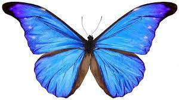

The buity of batterflies

A butterfly is a flying insect with a small body and large,often colorful wings.
Some gardeners plant specific flowers that attract butterflies. Butterflies are closely related to moths,
which also have wings that are large in proportion to their bodies and antennae.
Fantastic facts about butterflies
- Butterflies can't fly if they're cold
- Butterfly wings are actually transparent
- Butterflies taste with their feet
- Butterflies don't actually eat anything
- It's really easy to attract butterflies to your garden.
Click here for more